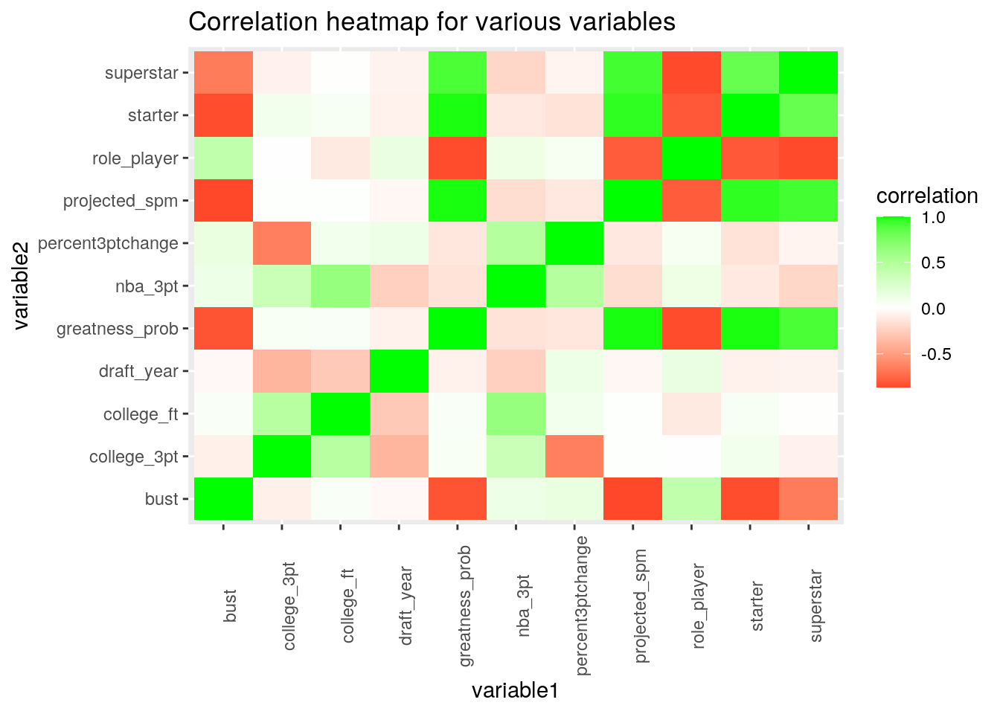
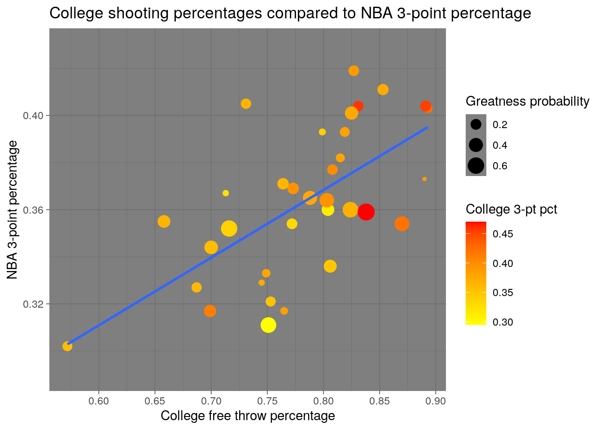
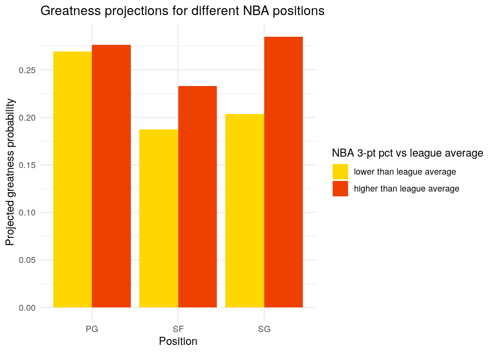
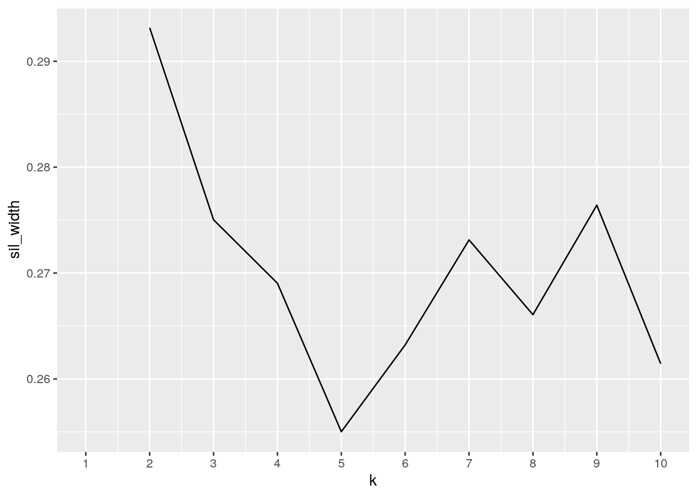
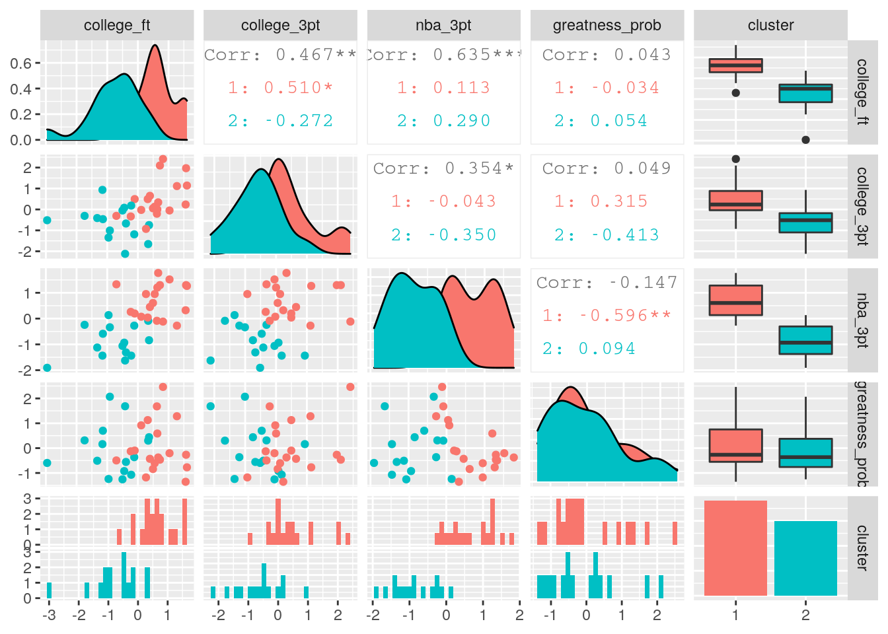
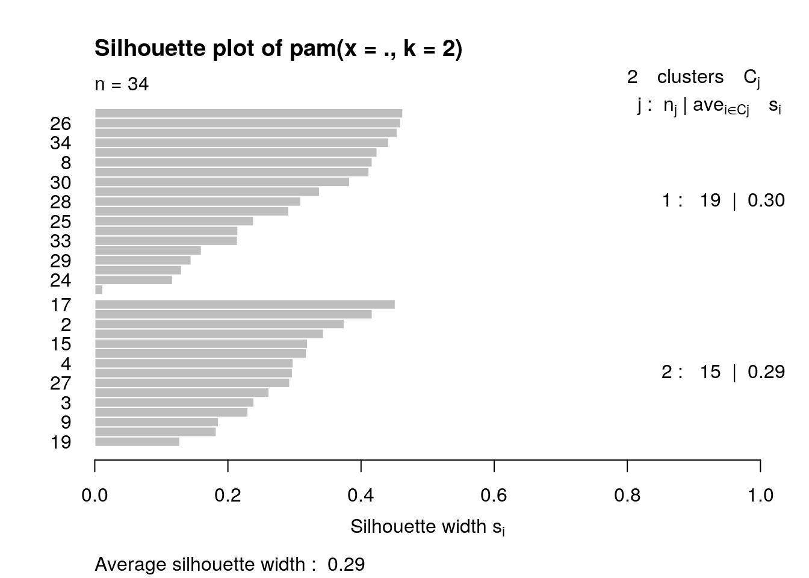

library(tidyverse)
library("fivethirtyeight", lib.loc = "~/R/x86_64-pc-linux-gnu-library/3.6")
NBABIOSTATS <- read_csv("NBABIOSTATS5.csv")
NBABIOSTATS <- NBABIOSTATS %>% rename(college_3pt = college_3_point_percentage,
college_ft = college_career_free_throw_percentage, nba_3pt = nba_career_3_point_percentage)For this project, I chose to combine the data I collected for my Biostatistics project with data from fivethirtyeight, a website that analyzes data for topics ranging from sports to politics. In my previous Biostatistics project, I collected data on the shooting percentages for basketball players during their careers in college and professional basketball. I randomly selected 60 players that matched a minimum shot number criteria and found the college 3-point and free throw percentages for those players as well as their NBA 3-point percentages. I immediately renamed the variables in the NBABIOSTATISTICS dataset to make the variables easier to manipulate. The data from fivethirtyeight looks at projections for NBA players drafted from 2002 to 2015. It includes the projected statistical plus/minus (SPM) for early in each player's career, which is generated by a model that basketball statisticians use to predict NBA success before a player even plays an NBA game. The dataset uses SPM to find the probability that a player would become a superstar, starter, role player, or bust (for example, an SPM greater than 3.3 means a player has a very high probability of becoming a superstar). I picked these two datasets to combine because I really wanted to reexplore the data I had collected for my previous project. My dataset was made to compare how different players got better or worse at shooting after they entered the league and the fivethirtyeight dataset involves projecting the overall skills of players entering the NBA so I felt that these two datasets could work well if combined togother. I expected to find positive relationships between both types of college shooting and NBA 3-point shooting because players who shoot well in college tend to continue shooting well in the NBA and vice versa. Additionally, I predicted that all types of shooting would have positive relationships with the projected probability of a player being a superstar or starter because shooting ability is a very valuable trait in the NBA.
nba_draft_2015 <- nba_draft_2015 %>% pivot_wider(names_from = "position",
values_from = "draft_year")
NBABIOSTATS <- NBABIOSTATS %>% pivot_wider(names_from = "player",
values_from = "college_3pt")
nba_draft_2015 %>% head()## # A tibble: 6 x 12
## player id projected_spm superstar starter role_player bust C SF
## <chr> <chr> <dbl> <dbl> <dbl> <dbl> <dbl> <int> <int>
## 1 Karl-… karl… 1.03 0.135 0.427 0.163 0.275 2015 NA
## 2 Justi… just… 0.875 0.0835 0.511 0.177 0.229 NA 2015
## 3 Stanl… stan… 0.679 0.0678 0.424 0.278 0.230 NA 2015
## 4 Jahli… jahl… 0.522 0.0587 0.410 0.236 0.296 2015 NA
## 5 D`Ang… d-an… 0.512 0.152 0.342 0.0966 0.409 NA NA
## 6 Dakar… daka… 0.492 0.0213 0.368 0.418 0.194 2015 NA
## # … with 3 more variables: PG <int>, SG <int>, PF <int>NBABIOSTATS %>% head()## # A tibble: 6 x 62
## college_ft nba_3pt `Allen Crabbe` `Victor Oladipo` `Jordan Crawfor…
## <dbl> <dbl> <dbl> <dbl> <dbl>
## 1 0.819 0.393 0.382 NA NA
## 2 0.716 0.352 NA 0.338 NA
## 3 0.765 0.317 NA NA 0.384
## 4 0.778 0.402 NA NA NA
## 5 0.831 0.404 NA NA NA
## 6 0.772 0.354 NA NA NA
## # … with 57 more variables: `Collin Sexton` <dbl>, `Doug McDermott` <dbl>,
## # `Terry Rozier` <dbl>, `Paul George` <dbl>, `Reggie Jackson` <dbl>, `Damyean
## # Dotson` <dbl>, `Patrick Beverly` <dbl>, `Darius Miller` <dbl>, `Marcus
## # Smart` <dbl>, `Otto Porter Jr.` <dbl>, `Draymond Green` <dbl>, `Jaylen
## # Brown` <dbl>, `Quinn Cook` <dbl>, `D.J. Augustin` <dbl>, `Chasson
## # Randle` <dbl>, `Omari Spellman` <dbl>, `Malcolm Brogdon` <dbl>, `Justin
## # Anderson` <dbl>, `Alec Burks` <dbl>, `Jodie Meeks` <dbl>, `Wesley
## # Matthews` <dbl>, `Kyle Kuzma` <dbl>, `Kyle Korver` <dbl>, `Dillon
## # Brooks` <dbl>, `Frank Jackson` <dbl>, `Taurean Prince` <dbl>, `Ryan
## # Arcidiacono` <dbl>, `D'Angelo Russell` <dbl>, `Ben McLemore` <dbl>, `CJ
## # McCollum` <dbl>, `Kris Dunn` <dbl>, `T.J. McConnell` <dbl>, `J.J.
## # Barea` <dbl>, `E'Twaun Moore` <dbl>, `Frank Mason III` <dbl>, `Jalen
## # Brunson` <dbl>, `Justin Jackson` <dbl>, `Solomon Hill` <dbl>, `Wesley
## # Iwundu` <dbl>, `Bryn Forbes` <dbl>, `Chris Paul` <dbl>, `Jeremy
## # Lamb` <dbl>, `Gordon Hayward` <dbl>, `Terrence Ross` <dbl>, `Cory
## # Joseph` <dbl>, `Fred VanVleet` <dbl>, `Austin Rivers` <dbl>, `Isaiah
## # Thomas` <dbl>, `Luke Babbitt` <dbl>, `Rodney Hood` <dbl>, `Klay
## # Thompson` <dbl>, `Jeff Green` <dbl>, `Tim Hardaway Jr.` <dbl>, `Gary
## # Harris` <dbl>, `Jared Dudley` <dbl>, `Kevin Huerter` <dbl>, `Zach
## # Lavine` <dbl>The datasets were both already tidy so I decided to make them untidy using pivot_wider and then retidy them with pivot_longer. Pivoting the nba_draft_2015 dataset wider resulted in 5 new columns with each of the basketball positions, and if the player played did not play that position the value would be NA and if they did play then the value would display the year they were drafted. Pivoting the NBABIOSTATS dataset wider resulted in a different column being created for each individual player which displayed their NBA 3-pt value, so the dataset became very difficult to read and comprehend.
nba_draft_2015 <- nba_draft_2015 %>% pivot_longer(cols = c("C",
"SF", "PG", "SG", "PF"), names_to = ("position"), values_to = ("draft_year"),
values_drop_na = T)
NBABIOSTATS <- NBABIOSTATS %>% pivot_longer(cols = c(!1:2), values_to = ("college_3pt"),
names_to = ("player"), values_drop_na = T)
nba_draft_2015 %>% head()## # A tibble: 6 x 9
## player id projected_spm superstar starter role_player bust position
## <chr> <chr> <dbl> <dbl> <dbl> <dbl> <dbl> <chr>
## 1 Karl-… karl… 1.03 0.135 0.427 0.163 0.275 C
## 2 Justi… just… 0.875 0.0835 0.511 0.177 0.229 SF
## 3 Stanl… stan… 0.679 0.0678 0.424 0.278 0.230 SF
## 4 Jahli… jahl… 0.522 0.0587 0.410 0.236 0.296 C
## 5 D`Ang… d-an… 0.512 0.152 0.342 0.0966 0.409 PG
## 6 Dakar… daka… 0.492 0.0213 0.368 0.418 0.194 C
## # … with 1 more variable: draft_year <int>NBABIOSTATS %>% head()## # A tibble: 6 x 4
## college_ft nba_3pt player college_3pt
## <dbl> <dbl> <chr> <dbl>
## 1 0.819 0.393 Allen Crabbe 0.382
## 2 0.716 0.352 Victor Oladipo 0.338
## 3 0.765 0.317 Jordan Crawford 0.384
## 4 0.778 0.402 Collin Sexton 0.336
## 5 0.831 0.404 Doug McDermott 0.458
## 6 0.772 0.354 Terry Rozier 0.331Pivot_longer was used to return each of the datasets back to their tidy form. For the nba_draft_2015 dataset, the five position columns were moved to a single column called "position", where the position for each player would be displayed. For the NBABIOSTATS dataset, all of the columns that were just player names were moved to a single column called "player". Now both datasets were tidy.
NBAjoin <- nba_draft_2015 %>% inner_join(NBABIOSTATS)
NBAjoin## # A tibble: 34 x 12
## player id projected_spm superstar starter role_player bust position
## <chr> <chr> <dbl> <dbl> <dbl> <dbl> <dbl> <chr>
## 1 Quinn… quin… -0.454 0.000128 0.221 0.365 0.413 PG
## 2 Justi… just… -0.636 0.000926 0.157 0.412 0.430 SF
## 3 Terry… terr… -0.638 0.00747 0.188 0.300 0.505 PG
## 4 T.J. … tj-m… -0.760 0.00267 0.103 0.436 0.459 PG
## 5 Marcu… marc… 0.997 0.164 0.364 0.142 0.331 PG
## 6 Gary … gary… 0.299 0.0687 0.334 0.311 0.286 SG
## 7 Rodne… rodn… -0.315 0.00240 0.236 0.415 0.347 SG
## 8 Doug … doug… -0.593 0.00843 0.171 0.419 0.401 SF
## 9 Victo… vict… 1.21 0.160 0.429 0.175 0.236 SG
## 10 Ben M… ben-… 0.324 0.0575 0.405 0.188 0.350 SG
## # … with 24 more rows, and 4 more variables: draft_year <int>,
## # college_ft <dbl>, nba_3pt <dbl>, college_3pt <dbl>An inner join was performed to combine the two datasets. The ID variable for this join was the name of each player. I decided to use an inner join because I only wanted to analyze players that were present in both datasets. Initially, my NBABIOSTATS dataset had 60 rows (60 different players) and 4 columns and the nba_draft_2015 dataset had 1090 rows (1090 different players) and 9 columns. Combining these two datasets resulted in the dataset NBAjoin, which had 34 rows and 12 columns. This means that 26 players were dropped from my NBABIOSTATS dataset and 1056 players were dropped from the nba_draft_2015 dataset. The players that were dropped from the NBABIOSTATS were likely drafted after 2015 so they would not be included in the nba_draft_2015 dataset. The combined dataset was smaller than what I would have hoped for, but regardless, the join was successful.
NBAjoin <- NBAjoin %>% mutate(greatness_prob = (superstar + starter),
percent3ptchange = ((nba_3pt - college_3pt)/college_3pt) *
100)
NBAjoin %>% filter(draft_year < 2010) %>% select(player, position,
draft_year, greatness_prob, "nba_3pt", percent3ptchange)## # A tibble: 7 x 6
## player position draft_year greatness_prob nba_3pt percent3ptchange
## <chr> <chr> <int> <dbl> <dbl> <dbl>
## 1 Jodie Meeks SG 2009 0.0355 0.373 -3.37
## 2 Wesley Matthews SF 2009 0.0639 0.393 15.2
## 3 D.J. Augustin PG 2008 0.185 0.377 -6.22
## 4 Jeff Green SF 2007 0.368 0.344 -4.18
## 5 Jared Dudley SF 2007 0.174 0.405 11.0
## 6 Chris Paul PG 2005 0.653 0.359 -23.6
## 7 Kyle Korver SG 2003 0.211 0.404 -10.8NBAjoin %>% arrange(percent3ptchange)## # A tibble: 34 x 14
## player id projected_spm superstar starter role_player bust position
## <chr> <chr> <dbl> <dbl> <dbl> <dbl> <dbl> <chr>
## 1 Chris… chri… 1.52 0.163 0.490 0.0991 0.248 PG
## 2 Cory … cory… -0.173 0.0205 0.260 0.378 0.341 PG
## 3 Jorda… jord… -1.07 0.00162 0.0796 0.413 0.506 SG
## 4 Ben M… ben-… 0.324 0.0575 0.405 0.188 0.350 SG
## 5 Justi… just… -0.636 0.000926 0.157 0.412 0.430 SF
## 6 T.J. … tj-m… -0.760 0.00267 0.103 0.436 0.459 PG
## 7 Solom… solo… -1.09 0 0.0513 0.396 0.553 SF
## 8 Doug … doug… -0.593 0.00843 0.171 0.419 0.401 SF
## 9 Kyle … kyle… -0.496 0.000904 0.210 0.401 0.388 SG
## 10 Draym… dray… -0.557 0.00248 0.170 0.421 0.407 SF
## # … with 24 more rows, and 6 more variables: draft_year <int>,
## # college_ft <dbl>, nba_3pt <dbl>, college_3pt <dbl>, greatness_prob <dbl>,
## # percent3ptchange <dbl>Various dplyr functions were used to explore the NBAjoin dataset. First, two new columns were created using the mutate function. The probabilities of a player becoming a superstar or starter level player were combined into a new variable that represented the probability of a player being at least great. The percent change for 3-point percentage was calculated to how their 3-pt percentage changed after players entered the league. This was found by subtracting a player's college 3-point percentage from their NBA 3-point percentage and then dividing by the college 3-point percentage and multiplying by 100. To see how many older players were included in the dataset, NBAjoin was filtered so that only players drafted before 2010 were included, and the select function was used to select variables of interest to display, making the table easier to digest. I found that 7 out of the 34 players from the dataset were drafted before 2010. Next, the arrange feature was used to sort all the players based on their percent change for 3-point percentage, and surprisingly it was found that Chris Paul had the greatest negative percent change out of any player in the dataset (this is likely because he shot an unbelievable 47% from 3-point range in college so maintaining this percentage in the NBA would be extremely difficult).
NBAjoin %>% summarise(min_college_3pt = min(college_3pt), max_college_3pt = max(college_3pt))## # A tibble: 1 x 2
## min_college_3pt max_college_3pt
## <dbl> <dbl>
## 1 0.295 0.47NBAjoin %>% filter(college_3pt == 0.295)## # A tibble: 1 x 14
## player id projected_spm superstar starter role_player bust position
## <chr> <chr> <dbl> <dbl> <dbl> <dbl> <dbl> <chr>
## 1 Marcu… marc… 0.997 0.164 0.364 0.142 0.331 PG
## # … with 6 more variables: draft_year <int>, college_ft <dbl>, nba_3pt <dbl>,
## # college_3pt <dbl>, greatness_prob <dbl>, percent3ptchange <dbl>NBAjoin %>% summarise(`college 3-pt pct` = mean(college_3pt),
`college free throw pct` = mean(college_ft), `nba 3-pt pct` = mean(nba_3pt)) %>%
pivot_longer(cols = c("college 3-pt pct", "college free throw pct",
"nba 3-pt pct"), names_to = ("Shooting Category"), values_to = ("mean"))## # A tibble: 3 x 2
## `Shooting Category` mean
## <chr> <dbl>
## 1 college 3-pt pct 0.377
## 2 college free throw pct 0.780
## 3 nba 3-pt pct 0.363NBAjoin %>% group_by(position) %>% summarise(`#_of_players` = n(),
mean_3pt_change = mean(percent3ptchange), mean_great_projection = mean(greatness_prob),
sd_great_projection = sd(greatness_prob))## # A tibble: 3 x 5
## position `#_of_players` mean_3pt_change mean_great_projecti… sd_great_project…
## <chr> <int> <dbl> <dbl> <dbl>
## 1 PG 10 -3.27 0.274 0.188
## 2 SF 11 -3.71 0.216 0.156
## 3 SG 13 -2.45 0.272 0.152NBAjoin %>% summarize(cor_college_ft_vs_nba_3pt = cor(college_ft,
nba_3pt, use = "pair"), cor_college_3pt_vs_nba_3pt = cor(college_3pt,
nba_3pt, use = "pair"))## # A tibble: 1 x 2
## cor_college_ft_vs_nba_3pt cor_college_3pt_vs_nba_3pt
## <dbl> <dbl>
## 1 0.635 0.354The summarise function was used to generate various summary statistics for the dataset. First, the minimum and maximum, for college 3-point percentage values were found. I immediately recognized that the maximum college 3-point percentage of 47% came from Chris Paul. The filter function was used to find that the minimum college 3-point percentage (29.5%) came from Marcus Smart. I then used summarise to find the mean values for NBA 3-pt percentage (36.3%) and college free throw (78.0%) and 3-pt percentage (37.7%), and used pivot_longer to combine the columns for mean to make the table look cleaner. As I was looking at the joined dataset, I noticed that I didn't see any centers (C) or power forwards (PF). To investigate this, the group_by function was used to group the dataset by player postion, and using summarise and the count function I was able to confirm that no C's or PF's were present, and instead their were 10 PG's, 11 SF's, and 13 SG's. Additionally, for each position the mean value for 3-point percent change and the mean and standard deviation for greatness projection were calculated. From this dataset, the shooting guards experienced the least negative 3-point percentage change after entering the league, at -2.45%. The PG's and SG's had mean greatness projections that were similar to each other but SF's had a lower mean greatness projection, and the standard deviation was higher for PG's compared to SF's and SG's. Summarise was then used to find the coorelation between the two types of college shooting and NBA 3-point percentage. For NBA 3-pt percentage with college free throw percentage, the correlation value of 0.635 suggests that there is a relatively strong positive correlation between college free throw percentage and NBA 3-point percentage. For college 3-pt percentage, the correlation value of 0.354 suggests that there is a somewhat weak positive correlation between college 3-pt percentage and NBA 3-point percentage. The correlation between college free throw percentage and NBA 3-point percentage was expected because a lot of college players that I watch who are good free throw shooters also tend to be good at shooting 3-pointers, but the fact that this correlation was stronger than the correlation between college 3-pt shooting and NBA 3-pt shooting is a surprise because these 3-point shots are much more similar to eachother than they are to free throws. These correlations will be explored in greater detail below.
cormap <- NBAjoin %>% select_if(is.numeric) %>% cor(use = "pair")
cormap <- cormap %>% as.data.frame %>% rownames_to_column("variable1") %>%
pivot_longer(2:12, names_to = "variable2", values_to = "correlation")
cormap %>% ggplot(aes(variable1, variable2, fill = correlation)) +
geom_tile() + theme(axis.text.x = element_text(angle = 90,
margin = margin(0.1, unit = "cm"), vjust = 1)) + scale_fill_gradient2(low = "red",
mid = "white", high = "green") + ggtitle("Correlation heatmap for various variables")
A correlation heatmap was generated for all the numeric variables in the dataset. First, a correlation matrix that calculated the correlation for each pair of variables was generated. The correlation matrix was then made into a tidy table showing the correlations between each variable by pivoting longer. The correlation heatmap was then plotted, with green representing a strong positive correlation and red representing a strong negative correlation. The strongest correlations were between variables that were obviously correlated, such as a strong negative correlation between a player's greatness probability and the player being projected to be a bust. As previously seen, college free throw percentage was shown to have a somewhat strong positive correlation with NBA 3-pt percentage, and the correlation between these variables is stronger than the positive correlation between college 3-pt percentage and NBA 3-pt percentage. A surprising piece of information was that college shooting percentage appeared to have no correlation with projected greatness probability, suggesting that a better shooter wasn't necessarily projected to be a better player than a worse shooter. Additionally, NBA 3-pt percentage and greatness probability had a slightly negative correlation, another surprise. This could be due to the dataset being small, but it might be because there are players who only excel at shooting so they are projected to be role players or busts.
ggplot(NBAjoin, aes(college_ft, nba_3pt)) + scale_color_gradient(low = "yellow",
high = "red") + geom_point(aes(color = college_3pt, size = greatness_prob)) +
ylim(0.29, 0.43) + xlim(0.55, 0.9) + ggtitle("College shooting percentages compared to NBA 3-point percentage") +
ylab("NBA 3-point percentage") + xlab("College free throw percentage") +
geom_smooth(method = "lm", se = F) + scale_x_continuous(n.breaks = 8) +
theme_dark() + labs(size = "Greatness probability") + labs(color = "College 3-pt pct")
To further explore the relationship between college shooting percentages and NBA 3-point percentage, a scatterplot was created that plotted NBA 3-point percentage compared with college free throw percentage, and a linear regression line was generated. Additionally, the color of each point reflects the college 3-pt percentage for that player and the size of the point reflects the projected greatness for that player. This plot helps visual the positive correlation between college free throw percentage and NBA 3-pt percentage, as seen by the large and positive slope of the regression line. I also noticed that the upper right portion of the plot contained points that were a darker shade of orange/red, which helps show the positive correlation between college 3-pt percentage and both college free throw percentage and NBA 3-pt percentage. The larger point sizes don't appear to be situated in any particular portion of the graph, reflecting the lack of correlation between shooting ability and projected greatness.
NBAjoin <- NBAjoin %>% mutate(nba_3pt_vs_avg = cut(nba_3pt, breaks = c(0,
0.35, 1), labels = c("lower than league average", "higher than league average")))
NBAjoin %>% ggplot(aes(x = position, fill = nba_3pt_vs_avg)) +
geom_bar(aes(y = greatness_prob), stat = "summary", fun = mean,
position = "dodge") + scale_y_continuous(n.breaks = 6) +
ggtitle("Greatness projections for different NBA positions") +
xlab("Position") + ylab("Projected greatness probability") +
theme_minimal() + scale_fill_manual(values = c("gold", "orangered2")) +
labs(fill = "NBA 3-pt pct vs league average")
A plot was made that compared greatness projections across the different positions and shooting abilities in the dataset. I used mutate to create a new categorical variable based on whether each player was shooting above or below the league average shooting percentage, which is typically around 35%. A bar chart was then created and each position was split based on their above or below average shooting ability. The plot showed that a point guard's shooting ability did not significantly change where that player was projected but for small forwards and shooting guards, shooting above the league average for 3-pointers typically meant they had a higher greatness projection. PG's were typically projected to be greater players than SF's regardless of their shooting ability, but an SG being an above average shooter typically would mean they project higher than any PG.
pam_dat <- NBAjoin %>% select(college_ft, college_3pt, nba_3pt,
greatness_prob) %>% scale %>% as.data.frame
library(cluster)
sil_width <- vector()
for (i in 2:10) {
pam_fit <- pam(pam_dat, k = i)
sil_width[i] <- pam_fit$silinfo$avg.width
}
ggplot() + geom_line(aes(x = 1:10, y = sil_width)) + scale_x_continuous(name = "k",
breaks = 1:10)
pam1 <- pam_dat %>% pam(2)
pam1## Medoids:
## ID college_ft college_3pt nba_3pt greatness_prob
## [1,] 30 0.3926821 0.6495181 0.4491095 -0.4302987
## [2,] 22 -0.3885046 -0.6708388 -1.3103648 -0.5561355
## Clustering vector:
## [1] 1 2 2 2 2 1 1 1 2 1 1 1 2 2 2 1 2 1 2 2 1 2 2 1 1 1 2 1 1 1 2 1 1 1
## Objective function:
## build swap
## 1.616089 1.560145
##
## Available components:
## [1] "medoids" "id.med" "clustering" "objective" "isolation"
## [6] "clusinfo" "silinfo" "diss" "call" "data"pam_dat <- pam_dat %>% mutate(cluster = as.factor(pam1$clustering))
library(GGally)
ggpairs(pam_dat, aes(color = cluster))
NBAjoin %>% slice(pam1$id.med)## # A tibble: 2 x 15
## player id projected_spm superstar starter role_player bust position
## <chr> <chr> <dbl> <dbl> <dbl> <dbl> <dbl> <chr>
## 1 D.J. … dj-a… -0.889 0.00624 0.179 0.216 0.599 PG
## 2 Reggi… 4-re… -0.564 0.00652 0.158 0.417 0.418 PG
## # … with 7 more variables: draft_year <int>, college_ft <dbl>, nba_3pt <dbl>,
## # college_3pt <dbl>, greatness_prob <dbl>, percent3ptchange <dbl>,
## # nba_3pt_vs_avg <fct>plot(pam1, which = 2)
I decided to run cluster analysis on parts of the dataset. I selected college free throw and 3-pt percentage, NBA 3-pt percentage, and greatness projection, and scaled these variables. To determine the number of clusters that should be generated, the silhouette widths for different numbers of clusters was plotted, and the cluster number with the largest silhouette width was determined to be 2. Partioning around Medoids (PAM) clustering was then used to generate 2 clusters for the desired numeric variables in the dataset. A plot was generated to visualize the cluster data by using ggpairs to make a scatterplot for every combination of variables and coloring the points by cluster. The clusters appear to be most separated when plotting the relationship between NBA 3-pt percentage and college free throw percentage. The two clusters overlapped a lot when separating by projection of greatness, but cluster 1 typically had higher shooting percentages across the board. The players most representative for each cluster was determined by finding the final mediods. For cluster 1, D.J. Augustin was the most representative player and for cluster 2, Reggie Jackson was the most representative player. Finally, a silhouette plot was generated to find the average silhouette width. An average silhouette width of 0.29 suggested that the fit of the cluster solution is weak.